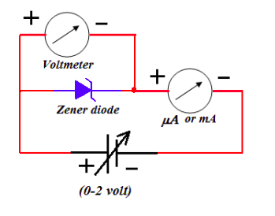
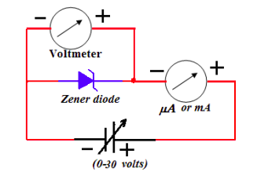

To draw the V-I characteristic of Zener diode and to determine Zener breakdown voltage.
Zener diode is a heavily doped PN junction diode. Due to heavily doped, its
depletion layer is very thin and is order of micrometer. The forward bias characteristic of Zener
diode is same as the normal PN junction diode but in reverse bias it has different characteristic.
Initially, a negligible constant current flow through the zener diode in its reverse bias but at
certain voltage, the current becomes abruptly large. This voltage is called as zener voltage. This
sudden and sharp increase in zener current is called as zener breakdown.


Animation of the experiment:--
Click here to perform the simulation
| S.No. | VF (volts) | IF (mA) |
|---|---|---|
| 1 | ||
| 2 | ||
| 3 | ||
| 4 |
| S.No. | VR (volts) | IR (uA) |
|---|---|---|
| 1 | ||
| 2 | ||
| 3 | ||
| 4 |
The V-I characteristic of Zener diode indicates that characteristic of Zener diode in forward bias is same as PN junction diode. In reverse bias, a negligible constant current flow through the zener diode but the current becomes abruptly large at certain voltage. This voltage is called as zener voltage. This sudden and sharp increase in zener current is called as zener breakdown. Vknee=0.7 volt and VZ= 9 volt.